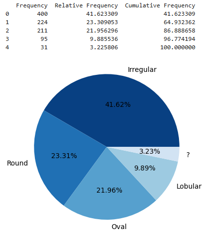
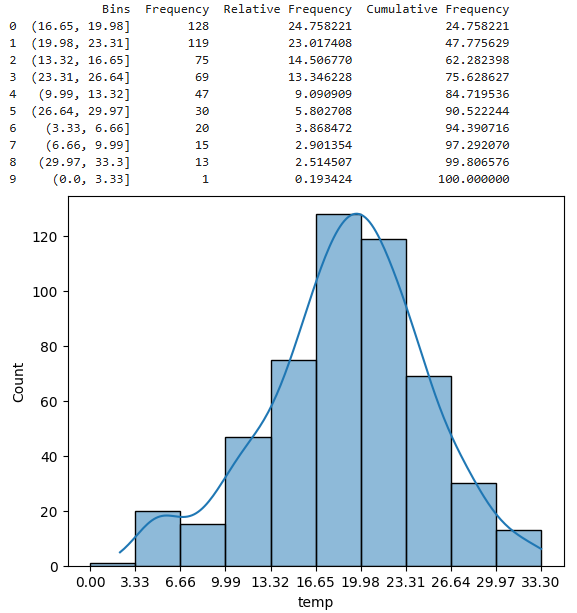
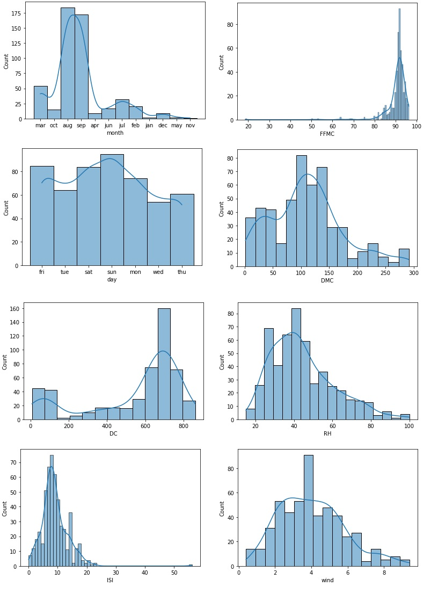
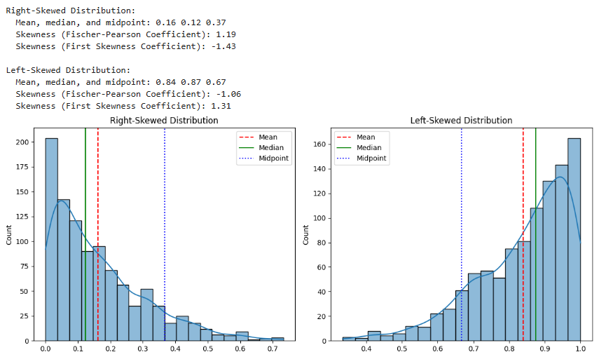
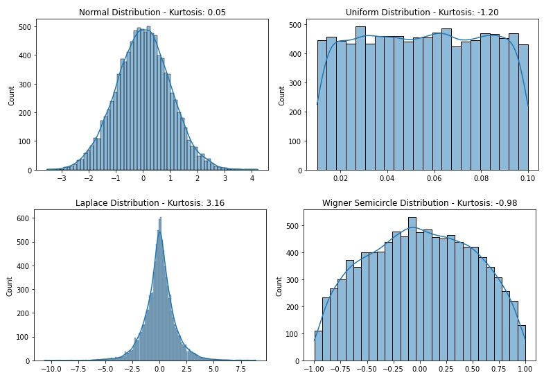

Module 3 — Descriptive Analysis#
Descriptive analysis is part of the core of Exploratory Data Analysis (EDA). Its purpose is to summarize, organize, and characterize datasets using numerical measures and some visual representations, without making inferences beyond the observed data.
In this module, students learn how to describe data distributions, compute summary statistics, analyze variability and relative position, explore associations between variables, and model simple linear relationships.
Learning Objectives#
By the end of this module, students will be able to:
Describe and interpret data distributions.
Compute and compare central tendency and variability measures.
Analyze relative position and distribution shape.
Understand and apply the normal distribution.
Quantify associations between variables.
Build and interpret simple linear regression models.
Use computational tools (e.g., Pandas) to summarize datasets.
3.1 Distributions#
A distribution describes how values of a variable are spread across their range.
Key questions include:
Where are values concentrated?
How spread out are they?
Are there extreme or unusual values?
Is the distribution symmetric or skewed?
Distributions can be explored numerically and visually (e.g., frequency tables, histograms).
To illustrate, consider the mammographic dataset. Variable ‘Shape’ can assume the values ‘Irregular’, ‘Round’, ‘Oval’, ‘Lobular’, and there are also missing values represented by a question mark ‘?’.
Python Code#
The code snippet and table below show the frequency of variable ‘Shape’ with the absolute frequency (count), relative frequency, and cumulative frequency of each of its possible values, including the missing values, and a pie chart with its relative frequency.
# CODE 3.1
# Determining the frequency distribution, frequency table and pie chart
# of variable 'Shape' in the Mammographic dataset
import pandas as pd
import matplotlib.pyplot as plt
import seaborn as sns
from ucimlrepo import fetch_ucirepo
# fetch dataset (https://archive.ics.uci.edu/dataset/161/mammographic+mass)
dmammo = fetch_ucirepo(id=161)["data"]["original"]
SShape = pd.Series(dmammo['Shape'])
ftable = SShape.value_counts(dropna=False) # Generate the frequency table
rftable = ftable / len(SShape) * 100 # Relative frequency
cftable = ftable.cumsum() / len(SShape) * 100 # Cumulative frequency
df = pd.DataFrame({
"Frequency": ftable.to_list(),
"Relative Frequency": rftable.to_list(),
"Cumulative Frequency": cftable.to_list()})
placeholders = {1.0:'Round', 2.0:'Oval', 3.0:'Lobular', 4.0:'Irregular'}
ftable.index = ftable.index.map(lambda x: placeholders.get(x, '?'))
print(df)
fig, figftable = plt.subplots()
# Using a color palette with different levels of the same color
colors = sns.color_palette("Blues", len(ftable)* 3)[::-3]
# Plotting the pie chart with the new color palette
figftable.pie(
ftable.to_list(), labels=ftable.index.to_list(),
autopct='%1.2f%%', colors=colors)

Figure: Frequency table and pie chart of variable ‘Shape’ in the mammographic dataset.
Prompt — Descriptive Analysis of the Shape Variable (Mammographic Dataset)#
You are a data analysis assistant supporting an **Advanced Exploratory Data Analysis (AEDA)** course.
Using the **Mammographic Mass dataset** from the UCI Machine Learning Repository, perform a **descriptive analysis of the categorical variable `Shape`**.
#### Tasks
1. Load the Mammographic Mass dataset in its original form.
2. Treat the variable `Shape` as a categorical variable and **include missing values** in the analysis.
3. Compute the following descriptive measures:
- Absolute frequency of each category
- Relative frequency (percentage of total observations)
- Cumulative relative frequency (percentage)
4. Organize the results into a **frequency table** with the following columns:
- Frequency
- Relative Frequency (%)
- Cumulative Frequency (%)
5. Convert the numerical codes of the `Shape` variable into semantic labels using the mapping:
- `1` → Round
- `2` → Oval
- `3` → Lobular
- `4` → Irregular
- Missing or undefined values → `?`
6. Create a **pie chart** to visualize the distribution of the `Shape` categories:
- One slice per category
- Percentages displayed with two decimal places
- A single-hue color palette with varying intensities
7. Save the visualization as a **high-resolution SVG vector file** suitable for publication.
#### Output
- A frequency table summarizing the distribution of `Shape`
- A pie chart visualization of the category proportions
- A brief written interpretation describing what the distribution reveals about the `Shape` variable
Ensure that all results follow standard **descriptive statistics** and **exploratory data analysis** conventions.
To illustrate how to build the frequency table of numeric variables (quantitative data), consider variable temperature (‘temp’) of the Forest Fires dataset.
Python Code#
Code 3.2 presents a script to calculate and print the frequency table for a numeric variable (quantitative data) using the method Series() in Pandas. The script allows setting the number of bins (nbins), the inferior and superior limits of the histogram, and then builds and plots the dataframe with the bins and their respective frequencies.
# CODE 3.2
# Determining the frequency distribution, frequency table and histogram
# of continuous variables in the Forest Fires dataset
import pandas as pd
import numpy as np
import matplotlib.pyplot as plt
import seaborn as sns
from ucimlrepo import fetch_ucirepo
# fetch dataset (https://archive.ics.uci.edu/ml/datasets/forest+fires)
dforest = fetch_ucirepo(id=162)["data"]["original"]
var = "temp" # Choose the target variable
SShape = pd.Series(dforest[var])
nbins = 10; inflimit = 0; suplimit = max(SShape)
ampl = (suplimit - inflimit) / nbins
# Define the range of the variable and bin size
fbins = np.arange(0, suplimit + ampl, ampl)
# The pandas.cut function groups data into bins and counts frequency
ftable = pd.cut(SShape, fbins).value_counts() # Absolute frequency
rftable = ftable / len(SShape) * 100 # Relative frequency
cftable = ftable.cumsum() / len(SShape) * 100 # Cumulative frequency
df = pd.DataFrame({"Bins": ftable.index.to_list(),
"Frequency": ftable.to_list(),
"Relative Frequency": rftable.to_list(),
"Cumulative Frequency": cftable.to_list(),})
print(df)
plt.xticks(fbins)
sns.histplot(dforest, x=var, bins=fbins, kde=True)

Figure: Histogram for the variable ‘temp’ of the Forest Fires dataset.
Prompt — Frequency Distribution, Frequency Table, and Histogram (Forest Fires Dataset)#
You are a data analysis assistant supporting an **Advanced Exploratory Data Analysis (AEDA)** course.
Using the **Forest Fires dataset** from the UCI Machine Learning Repository, generate the **frequency distribution**, **frequency table**, and **histogram** for a continuous variable (default: `temp`) following the exact logic below.
#### Tasks
1. Load the **Forest Fires dataset** in its original form.
2. Select a continuous target variable named **`temp`** (use `temp` unless otherwise specified).
3. Create a frequency distribution using **equal-width bins** with the following settings:
- Number of bins: `nbins = 10`
- Lower limit: `inflimit = 0`
- Upper limit: `suplimit = max(temp)`
4. Use binning (equivalent to `pandas.cut`) to compute:
- Absolute frequency per bin
- Relative frequency per bin (percentage of total observations)
- Cumulative relative frequency (percentage)
5. Build and display a **frequency table** with the columns:
- `Bins` (interval labels)
- `Frequency`
- `Relative Frequency`
- `Cumulative Frequency`
6. Generate a **histogram** of the chosen variable using the same bin edges (`fbins`) and:
- Display the x-axis ticks at the bin edges
- Overlay a **KDE curve** (kernel density estimate)
7. Output:
- The frequency table
- The histogram with KDE overlay
- A brief interpretation describing the distribution (concentration, spread, skewness, and any unusual patterns)
3.1.1 Shapes of Distributions#
Common distribution shapes include:
Unimodal: one peak
Bimodal: two peaks
Multimodal: more than two peaks
Symmetric: balanced around the center
Right-skewed (positive skew): long tail to the right
Left-skewed (negative skew): long tail to the left
Uniform: values evenly distributed
Understanding shape helps guide the choice of summary statistics and models.
# CODE 3.3
# Plot distributions with different shapes
import matplotlib.pyplot as plt
import seaborn as sns
from ucimlrepo import fetch_ucirepo
# fetch dataset (https://archive.ics.uci.edu/ml/datasets/forest+fires)
dforest = fetch_ucirepo(id=162)["data"]["original"]
# Set up the x-labels for each Plot Distribution
x_labels = ["month", "day", "FFMC", "DMC", "DC", "ISI", "RH", "wind"]
# Set up sub-plots layout
fig, axes = plt.subplots(4, 2, figsize=(13, 18), layout="constrained")
for idx, x_label in enumerate(x_labels):
# Flatten the axes array for easy iteration
ax = axes.flat[idx]
sns.histplot(dforest, x=x_label, bins="auto", kde=True, ax=ax)

Prompt — Plot Distributions with Different Shapes (Forest Fires Dataset)#
You are a data analysis assistant supporting an **Advanced Exploratory Data Analysis (AEDA)** course.
Using the **Forest Fires dataset** from the UCI Machine Learning Repository in its original form, generate a single multi-panel figure that visualizes **distributions with different shapes** for selected variables.
#### Tasks
1. Load the Forest Fires dataset in its original form.
2. Define the following list of variables to be analyzed, preserving this exact order:
["month", "day", "FFMC", "DMC", "DC", "ISI", "RH", "wind"]
3. Create a figure composed of **4 rows and 2 columns of subplots**, with an overall figure size close to **(13, 18)** and a layout that prevents overlapping elements.
4. For each variable in the list:
- Select the corresponding subplot
- Plot a **histogram** of the variable
- Use an **automatic binning strategy** equivalent to `bins="auto"`
- Overlay a **kernel density estimate (KDE)** curve on top of the histogram
- Label the x-axis with the variable name
5. Ensure that all eight subplots are displayed within a single figure and share a consistent visual style.
#### Output
- A single multi-panel figure containing histograms with KDE overlays for all specified variables
- A short written interpretation describing how the distribution shapes differ across variables (e.g., skewness, spread, modality)
3.1.2 Contingency Tables#
A contingency table (or cross-tabulation) summarizes the relationship between two categorical variables.
Rows represent categories of one variable
Columns represent categories of another variable
Cell values represent frequencies or proportions
Contingency tables are fundamental for analyzing categorical associations.
# CODE 3.4
# Generate Contingency Tables for the Mammographic Dataset
import pandas as pd
from ucimlrepo import fetch_ucirepo
# fetch dataset (https://archive.ics.uci.edu/ml/datasets/Mammographic+Mass)
dmammo = fetch_ucirepo(id=161)["data"]["original"]
# Remove rows with missing values
dmammo.dropna(inplace=True)
# Print the contingency tables
var = ["Shape", "Margin", "Density"]
print("**Contingency Tables**")
for i in var:
CT = pd.crosstab(dmammo[i], dmammo["Severity"])
print("Variables", i, "and Severity:\n", CT)

Prompt — Contingency Tables for the Mammographic Mass Dataset#
You are a data analysis assistant supporting an **Advanced Exploratory Data Analysis (AEDA)** course.
Using the **Mammographic Mass dataset** from the UCI Machine Learning Repository in its original form, generate **contingency tables** to analyze the relationship between selected categorical variables and the target variable **`Severity`**.
#### Tasks
1. Load the Mammographic Mass dataset in its original form.
2. Remove all rows containing **missing values** so that the analysis is performed only on complete cases.
3. Define the following list of explanatory variables:
["Shape", "Margin", "Density"]
4. For each variable in the list:
- Construct a **contingency table** (cross-tabulation) between the selected variable and the variable **`Severity`**
- Use the selected variable as rows and `Severity` as columns
- Count the absolute frequencies of observations in each cell
5. Display each contingency table clearly, indicating the pair of variables being analyzed.
#### Output
- A set of contingency tables showing the joint frequency distributions between:
- `Shape` and `Severity`
- `Margin` and `Severity`
- `Density` and `Severity`
Ensure that the contingency tables are computed using standard cross-tabulation logic (equivalent to `pandas.crosstab`) and follow established **exploratory data analysis** conventions.
3.2 Summary Measures#
Summary measures provide numerical descriptions of datasets, capturing central tendency, dispersion, position, and shape.
3.2.1 Central Tendency Measures#
Central tendency describes the typical value of a variable.
Mean: \(\bar{x} = \frac{1}{n} \sum_{i=1}^{n} x_i\)
Median: middle value of the ordered data
Mode: most frequent value
Midpoint: \(\text{Midpoint} = \frac{x_{\min} + x_{\max}}{2}\)
Trimmed mean: mean after removing extreme values
Weighted mean: \(\bar{x}_w = \frac{\sum_{i=1}^{n} w_i x_i}{\sum_{i=1}^{n} w_i}\)
The code snippet below contains the script to calculate the mean, median, and midpoint of numeric variables ‘FFMC’ and ‘temp’, and the mode of the nominal variables ‘month’ and ‘day’ of the Forest Fires dataset.
# CODE 3.5
# Calculating the mean and mode one by one using the Statistics library
# Numeric variables
import statistics as st
print('**Forest Fires Dataset**')
print('\n*Numeric Variable FFMC*')
print('Mean of variable FFMC: {:.2f}'.format(st.mean(dforest['FFMC'])))
print('Median of variable FFMC: {:.2f}'.format(st.median(dforest['FFMC'])))
midpoint = (max(dforest['FFMC'])+min(dforest['FFMC']))/2
print('Midpoint of variable FFMC: {:.2f}'.format(midpoint))
print('\n*Numeric Variable temp*')
print('Mean of variable temp: {:.2f}'.format(st.mean(dforest['temp'])))
print('Median of variable temp: {:.2f}'.format(st.median(dforest['temp'])))
midpoint = (max(dforest['temp'])+min(dforest['temp']))/2
print('Midpoint of variable temp: {:.2f}'.format(midpoint))
# Nominal variables
print('\n*Categorical Variables*')
print('Mode of nominal variable month: {v1}'
.format(v1=st.mode(dforest['month'])))
print('Mode of nominal variable day: {v1}'
.format(v1=st.mode(dforest['day'])))

Prompt — Central Tendency Measures for Numeric and Categorical Variables (Forest Fires Dataset)#
You are a data analysis assistant supporting an **Advanced Exploratory Data Analysis (AEDA)** course.
Using the **Forest Fires dataset** from the UCI Machine Learning Repository in its original form, compute and report **central tendency measures** for selected numeric and categorical variables, following the exact logic described below.
#### Tasks
1. Load the Forest Fires dataset in its original form.
2. For the **numeric variable `FFMC`**:
- Compute the **mean**
- Compute the **median**
- Compute the **midpoint**
- Report all values rounded to **two decimal places**
3. For the **numeric variable `temp`**:
- Compute the **mean**
- Compute the **median**
- Compute the **midpoint**
- Report all values rounded to **two decimal places**
4. For the **categorical (nominal) variables**:
- Determine the **mode** of the variable `month`
- Determine the **mode** of the variable `day`
5. Present the results in a clear, labeled textual format that distinguishes:
- Numeric variables
- Categorical variables
#### Output
- Mean, median, and midpoint for:
- `FFMC`
- `temp`
- Mode for:
- `month`
- `day`
Ensure that all computations follow standard definitions of **central tendency measures** and that the presentation mirrors a step-by-step descriptive analysis suitable for an AEDA course.
3.2.2 Comparing the Central Tendency Measures#
Comparing mean, median, and mode provides insight into:
Distribution symmetry
Presence of skewness
Influence of outliers
For example:
Symmetric distributions: mean ≈ median ≈ mode
Right-skewed distributions: mean > median
Left-skewed distributions: mean < median
Table: Comparison of the different central tendency measures.
Measure |
Sensitivity to Outliers |
Computation |
Existence |
When to Use |
|---|---|---|---|---|
Mean |
High |
All values |
Always |
Normal distributions; variation measures are needed; there are no extreme values |
Median |
No |
All values |
Always |
Skewed distributions; there are extreme values |
Mode |
No |
Some values |
Not always or multiple |
Categorical data; when the most frequent value is of interest |
Midpoint |
High |
Extreme values |
Always |
When the middle point of the range is desired |
Weighted Mean |
High |
All values |
Always |
When different values have different importance in the average |
Geometric Mean |
Low |
All values |
Always |
Skewed distributions; extreme values; average rates of change or growth over time (percentages or ratios) |
Harmonic Mean |
Low |
All values |
Always |
Extreme values present; averaging rates, ratios, or proportions |
Trimmed Mean |
No |
Some values |
Always |
Extreme values present; skewed distributions |
3.2.3 Variability Measures#
Variability measures quantify how spread out the data is.
Range: \(R = x_{\max} - x_{\min}\)
Interquartile range (IQR): \(IQR = Q_3 - Q_1\)
Variance: \(s^2 = \frac{1}{n-1} \sum_{i=1}^{n} (x_i - \bar{x})^2\)
Standard deviation: \(s = \sqrt{s^2}\)
Coefficient of variation: \(CV = \frac{s}{\bar{x}}\)
The code snippet below presents a script to calculate the variability measures and applies it to the ‘FFMC’ var-iable of the Forest Fires dataset.
# CODE 3.9
# Calculate the variability measures range (Eq. 3.9),
# IQR (Eq. 3.10), sIQR (Eq. 3.11), variance (Eq. 3.12),
# std (Eq. 3.14), and CV (Eq. 3.16) using Numpy
import numpy as np
from ucimlrepo import fetch_ucirepo
# fetch dataset
# https://archive.ics.uci.edu/ml/datasets/forest+fires
dforest = fetch_ucirepo(id=162)["data"]["original"]
var = "FFMC"
drange = np.max(dforest[var]) - np.min(dforest[var])
Q1, Q3 = np.percentile(dforest[var], [25, 75])
IQR = Q3 - Q1
sIQR = IQR / 2
dvar = np.var(dforest[var])
dstd = np.std(dforest[var])
CV = dstd / np.mean(dforest[var]) * 100
print("*Variability Measures*")
print(f"Range of variable FFMC: {drange:.2f}")
print(f"IQR of variable FFMC: {IQR:.2f}")
print(f"sIQR of variable FFMC: sIQR{sIQR:.2f}")
print(f"Variance of variable FFMC: {dvar:.2f}")
print(f"Standard deviation of variable FFMC: {dstd:.2f}")
print(f"Variation coefficient of variable FFMC: {CV:.2f}")

Prompt — Variability Measures for a Numeric Variable (Forest Fires Dataset)#
You are a data analysis assistant supporting an **Advanced Exploratory Data Analysis (AEDA)** course.
Using the **Forest Fires dataset** from the UCI Machine Learning Repository in its original form, compute and report a set of **variability measures** for a selected numeric variable, following the exact logic described below.
#### Tasks
1. Load the Forest Fires dataset in its original form.
2. Select the numeric variable **`FFMC`** as the target variable.
3. Compute the following variability measures using standard numerical definitions (equivalent to NumPy-based calculations):
- **Range**:
- **Interquartile Range (IQR)**:
- **Semi-Interquartile Range (sIQR)**:
- **Variance**:
- **Standard Deviation**:
- **Coefficient of Variation (CV)**:
4. Report all numerical results rounded to **two decimal places**.
5. Present the results in a clearly labeled, step-by-step textual format that distinguishes each variability measure.
#### Output
- Range of `FFMC`
- IQR of `FFMC`
- sIQR of `FFMC`
- Variance of `FFMC`
- Standard deviation of `FFMC`
- Coefficient of variation of `FFMC`
Ensure that all computations follow standard **descriptive statistics** definitions and are consistent with numerical implementations commonly used in exploratory data analysis.
3.2.4 Comparing the Variability Measures#
Different variability measures respond differently to outliers:
Range is highly sensitive to extremes
IQR is robust to outliers
Variance and standard deviation emphasize large deviations
CV enables comparison across variables with different scales
Table: Comparison of the different variability measures.
Measure |
Sensitivity to Outliers |
Computation |
Comments |
|---|---|---|---|
Range |
Yes |
Extreme values |
Sensitive to extreme values and does not take into account the data distribution |
IQR |
No |
Some values |
Not sensitive to extreme values and is suitable for skewed data |
sIQR |
No |
Some values |
Not sensitive to extreme values and is suitable for skewed data |
Variance |
Yes |
All values |
Sensitive to extreme values and measured in squared units of the variable |
Standard Deviation |
Yes |
All values |
Sensitive to extreme values and measured in the same unit as the variable |
Coefficient of Variation |
Yes |
All values |
Sensitive to extreme values and suitable for data with a mean close to zero |
3.2.5 Relative Position Measures#
Relative position indicates how a value compares to others.
Z-score: \(z_i = \frac{x_i - \bar{x}}{s}\)
Quantiles:
\(Q_1\): 25th percentile
\(Q_2\): 50th percentile (median)
\(Q_3\): 75th percentile
Z-scores express distance from the mean in standard deviation units.
3.2.6 The describe() Method from Pandas#
The describe() method in Pandas provides a quick summary including:
Count
Mean
Standard deviation
Minimum and maximum
Quartiles
This method is a practical computational counterpart to descriptive statistics.
3.2.7 Measures of Shape#
Shape measures describe the form of a distribution.
Skewness: degree and direction of asymmetry
Positive skew: right tail longer
Negative skew: left tail longer
Kurtosis: degree of peakedness or tail heaviness
Shape measures help diagnose distribution behavior beyond central tendency and variability.
The code snippet below was used to generate the data, calculate the central tendency measures and the skewness using the Fischer-Pearson and the First Skewness coefficients, and plot the results.
# CODE 3.11 - Skewness and Skewed Distributions
# Comparing right-skewed and left-skewed distributions
import statistics as st
import numpy as np
from scipy.stats import skew
import seaborn as sns
import matplotlib.pyplot as plt
# Generate random data
data_right = np.random.beta(a=1, b=5, size=1000) # Right-skewed
data_left = np.random.beta(a=5, b=1, size=1000) # Left-skewed
# Calculate statistics for both distributions
datasets = [("Right-Skewed", data_right), ("Left-Skewed", data_left)]
for name, data in datasets:
mean = st.mean(data)
median = st.median(data)
midpoint = (max(data) + min(data)) / 2
print(f"\n{name} Distribution:")
print(f" Mean, median, and midpoint: {mean:.2f} {median:.2f} {midpoint:.2f}")
print(f" Skewness (Fischer-Pearson Coefficient): {skew(data):.2f}")
print(f" Skewness (First Skewness Coefficient): {(mean - midpoint) / np.std(data):.2f}")
# Create side-by-side plots
fig, axes = plt.subplots(1, 2, figsize=(12, 5))
for ax, (name, data) in zip(axes, datasets):
mean = st.mean(data)
median = st.median(data)
midpoint = (max(data) + min(data)) / 2
sns.histplot(data, bins="auto", kde=True, ax=ax)
ax.axvline(x=mean, color="r", linestyle="--", label="Mean")
ax.axvline(x=median, color="g", linestyle="-", label="Median")
ax.axvline(x=midpoint, color="b", linestyle=":", label="Midpoint")
ax.set_title(f"{name} Distribution")
ax.legend()
plt.tight_layout()
plt.show()

Prompt — Skewness and Skewed Distributions (Right-Skewed vs. Left-Skewed)#
You are a data analysis assistant supporting an **Advanced Exploratory Data Analysis (AEDA)** course.
Your task is to **simulate, analyze, and compare right-skewed and left-skewed distributions**, reproducing both the **numerical analysis** and the **visual comparison** described below.
#### Tasks
1. Generate two synthetic datasets of equal size:
- A **right-skewed distribution** generated from a Beta distribution with parameters $a = 1$, $b = 5$
- A **left-skewed distribution** generated from a Beta distribution with parameters $a = 5$, $b = 1$
- Use a sample size of **1000 observations** for each dataset.
2. For **each distribution**, compute the following statistics:
- **Mean**
- **Median**
- **Midpoint**
- **Skewness (Fisher–Pearson coefficient)** using a standard skewness definition
- **Skewness (First skewness coefficient)**
3. Display the numerical results for each distribution in a clear, labeled textual format, including:
- Mean, median, and midpoint
- Both skewness coefficients
4. Create a **side-by-side visualization** consisting of **two subplots (1 row × 2 columns)**:
- One subplot for the right-skewed distribution
- One subplot for the left-skewed distribution
5. For each subplot:
- Plot a **histogram** using an automatic binning strategy
- Overlay a **kernel density estimate (KDE)** curve
- Draw vertical reference lines for:
- Mean (dashed line)
- Median (solid line)
- Midpoint (dotted line)
- Include a legend and an informative title indicating the distribution type
6. Ensure the layout is clean, well-labeled, and suitable for instructional use.
#### Output
- Numerical summaries for both right-skewed and left-skewed distributions, including central tendency measures and skewness coefficients
- A single figure with two side-by-side plots comparing the shapes of the distributions
Ensure that all computations and visualizations follow standard **descriptive statistics** and **exploratory data analysis** conventions and clearly illustrate the concept of skewness.
The code below describes how to generate data distributions to explore different levels of kurtosis.
# CODE 12
# Kurtosis: mesokurtic, platykurtic and leptokurtic distributions
import numpy as np
from scipy.stats import norm, laplace, semicircular, kurtosis
import seaborn as sns
import matplotlib.pyplot as plt
# Set up sub-plots layout
fig, ((ax1, ax2), (ax3, ax4)) = plt.subplots(2, 2, figsize=(13, 13), layout="constrained")
# Store names and kurtosis values for printing
kurtosis_info = []
# Normal distribution (Mesokurtic)
dnorm = norm.rvs(size=10000)
knorm = kurtosis(dnorm)
kurtosis_info.append(("Normal", knorm))
sns.histplot(dnorm, bins="auto", kde=2, ax=ax1)
# ax1.set_title(f"Normal Distribution - Kurtosis: {knorm:.2f}")
# Uniform distribution (Platykurtic)
dunif = np.random.uniform(0.01, 0.10, 10000)
kunif = kurtosis(dunif)
kurtosis_info.append(("Uniform", kunif))
sns.histplot(dunif, bins="auto", kde=2, ax=ax2)
# ax2.set_title(f"Uniform Distribution - Kurtosis: {kunif:.2f}")
# Laplace distribution (Leptokurtic)
dlap = laplace.rvs(loc=0, scale=1, size=10000)
klap = kurtosis(dlap)
kurtosis_info.append(("Laplace", klap))
sns.histplot(dlap, bins="auto", kde=2, ax=ax3)
# ax3.set_title(f"Laplace Distribution - Kurtosis: {klap:.2f}")
# Wigner semicircle distribution
dwigner = semicircular.rvs(size=10000)
kwigner = kurtosis(dwigner)
kurtosis_info.append(("Wigner Semicircle", kwigner))
sns.histplot(dwigner, bins="auto", kde=2, ax=ax4)
# ax4.set_title(f"Wigner Semicircle Distribution - Kurtosis: {kwigner:.2f}")
# Hide axis labels and ticks
for ax in [ax1, ax2, ax3, ax4]:
ax.set_xlabel("")
ax.set_ylabel("")
ax.set_xticks([])
ax.set_yticks([])
# Print summary to console
print("\nKurtosis Summary:")
for name, k in kurtosis_info:
print(f"{name}: {k:.2f}")

Prompt — Kurtosis and Distribution Shapes (Mesokurtic, Platykurtic, and Leptokurtic)#
You are a data analysis assistant supporting an **Advanced Exploratory Data Analysis (AEDA)** course.
Your task is to **simulate, analyze, and visually compare distributions with different kurtosis characteristics**, reproducing both the **numerical analysis** and the **multi-panel visualization** described below.
#### Tasks
1. Generate four synthetic datasets, each with **10,000 observations**, corresponding to different distribution types:
- **Normal distribution** (mesokurtic)
- **Uniform distribution** (platykurtic)
- **Laplace distribution** (leptokurtic)
- **Wigner semicircle distribution**
2. For each distribution:
- Compute the **kurtosis** using the standard excess kurtosis definition
- Store the distribution name and its kurtosis value for reporting
3. Create a **2 × 2 grid of subplots** with an overall figure size close to **(13, 13)** and a layout that avoids overlap between plots.
4. In each subplot:
- Plot a **histogram** using an automatic binning strategy
- Overlay a **kernel density estimate (KDE)** curve
- Do not display axis labels, tick marks, or grid lines
- Each subplot should correspond to one of the four distributions
5. Ensure all four plots share a consistent visual style and are suitable for instructional comparison of kurtosis effects.
6. After generating the plots, print a **console-style summary** listing:
- The name of each distribution
- Its corresponding kurtosis value, rounded to **two decimal places**
#### Output
- A single figure with four subplots illustrating:
- Mesokurtic behavior (normal distribution)
- Platykurtic behavior (uniform distribution)
- Leptokurtic behavior (Laplace distribution)
- A comparison case using the Wigner semicircle distribution
- A textual summary reporting the kurtosis values for each distribution
Ensure that the numerical computations and visualizations follow standard **descriptive statistics** and **exploratory data analysis** conventions and clearly illustrate differences in kurtosis.
3.3 The Normal Distribution#
The normal distribution is a symmetric, bell-shaped distribution defined by its mean \(\mu\) and standard deviation \(\sigma\).
Probability density function: \(f(x) = \frac{1}{\sigma \sqrt{2\pi}} e^{-\frac{(x - \mu)^2}{2\sigma^2}}\)
Key properties:
Mean = median = mode
Approximately 68%, 95%, and 99.7% of data fall within 1, 2, and 3 standard deviations
The normal distribution is central to statistical reasoning and modeling.

3.4 Measures of Association#
Association measures quantify relationships between variables.
3.4.1 Covariance#
Covariance measures joint variability: \(\text{cov}(X, Y) = \frac{1}{n-1} \sum_{i=1}^{n} (x_i - \bar{x})(y_i - \bar{y})\)
Positive covariance: variables increase or decrease together
Negative covariance: one increases as the other decreases, or vice-versa
Magnitude depends on scale
3.4.2 Correlation#
Correlation standardizes covariance:
Pearson correlation coefficient: \(r = \frac{\text{cov}(X, Y)}{s_x s_y}\)
Properties:
\(-1 \le r \le 1\)
Direction indicates sign
Magnitude indicates strength
3.4.3 Comparing the Correlation Measures#
Different correlation measures address different assumptions:
Pearson: linear relationships, continuous variables
Spearman: monotonic relationships, rank-based
Kendall: ordinal associations
Choice depends on data type and relationship structure.
Table: Comparison of different correlation measures.
Measure |
Parametric |
Range |
Types of Variables |
When to Use |
|---|---|---|---|---|
PCC |
Yes |
[-1, 1] |
Continuous |
Normally distributed data; linearly related variables; interval or ratio scale variables |
SRCC |
No |
[-1, 1] |
Ordinal or Continuous |
Monotonic but not necessarily linear relationships; variables not normally distributed |
KRCC |
No |
[-1, 1] |
Ordinal |
When distances between variables cannot be measured; ranked variables not necessarily normal |
3.5 Linear Regression#
Linear regression models the relationship between a dependent variable \(y\) and an independent variable \(x\):
\(y = \beta_0 + \beta_1 x + \varepsilon\)
where:
\(\beta_0\) is the intercept
\(\beta_1\) is the slope
\(\varepsilon\) is the error term
Linear regression supports:
Trend analysis
Prediction
Interpretation of associations
The figure below shows scatterplots with the respective linear regressors included. Note that the regressors are the lines that better approximate the data distributions and their slope indicates the type of correlation between the variables.

Reflection#
How do descriptive statistics guide modeling decisions?
When do summary measures fail to capture important structure?
How do association measures support exploratory insights?
Further Reading#
Refer to the course syllabus bibliography, particularly:
De Castro, L. N. (2026). Exploratory Data Analysis: Descriptive Analysis, Visualization, and Dashboard Design. CRC Press.